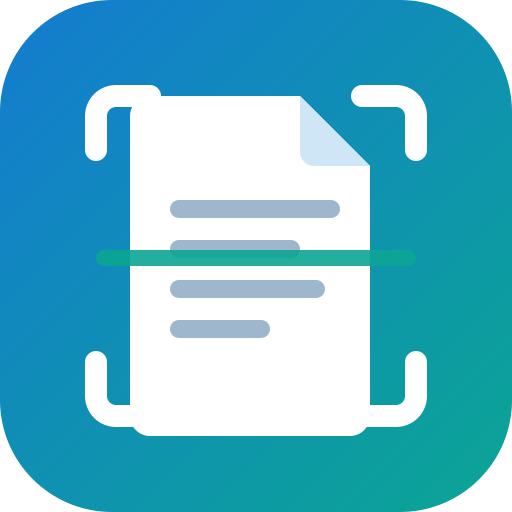

استخراج النص
اقرأ النص العربي والإنجليزي من ملفات PDF المصوّرة (الماسحة الضوئية) والصور.
🔒 القراءة تتم داخل جهازك، ولا يُرفع الملف إلى أي مكان. أول استخدام يحتاج إنترنت لتنزيل ملفات اللغة مرة واحدة.
جارٍ التجهيز…

اقرأ النص العربي والإنجليزي من ملفات PDF المصوّرة (الماسحة الضوئية) والصور.
🔒 القراءة تتم داخل جهازك، ولا يُرفع الملف إلى أي مكان. أول استخدام يحتاج إنترنت لتنزيل ملفات اللغة مرة واحدة.